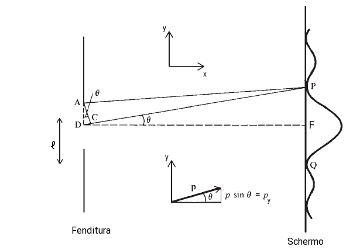

Heisenberg’s uncertainty principle
Nel 1927, il fisico tedesco Werner Heisenmberg notò che dal comportamento ondulatorio della materia emergevaa un'intrinseca impossibilità di determinare con estrema accuratezza alcune proprietà del sistema quantico. Heisenmberg identificò coppie di grandezze che non potevano essere misurate con assoluta accuratezza come ad esempio posizione e velocità oppure che è la medesima combinazione energia e tempo (si verifichi con una semplice analisi dimensionale).
Il comportamento ondulatorio delle particelle emerge facendole passare attraverso una fenditura avente ampiezza, ℓ, dello stesso ordine di grandezza della lunghezza d'onda, λ, della particella calcolata tramite la relazione di De Broglie. Il risultato che si osserva sullo schermo è una figura di diffrazione, come già illustrato per l' esperimento della doppia fenditura di Young.
Supponiamo di inviare un fascio di particelle lungo la direzione x, considerando l'immagine sottostante si nota come il masssimo dell'interferenza si osservi nel punto F, mentre i primi minimi relativi all'interferenza distruttiva nei punti P e Q. Prima che le particelle passino attraverso la fenditura queste hanno velocità vy, rispetto a y pari a zero, e di conseguenza nulla sarà anche il momento py = mvy.
La diffranzione da parte della fenditura fa acquisire alla particella una componente della velocità vy e conseguentemente un momento lungo questa direzione pari a, py = p sin θ; con p il momento totale della particella.
Usando un rilevatore si osserva che la maggior parte delle particelle colpisce il piano nella regione tra i due primi minimi, e che il primo minimo si verifica in corrispondenza dell'angolo θ tale che a ℓ sinθ= λ. La maggior parte delle particelle sarà diffratta quindi nell'intervallo +θ,-θ. Considerando solo questa porzione di particelle si ha un'incertezza sulla quantità di moto pari a:
Δpy = p sin θ − (p sin θ) = 2p sin θ = 2p λ/ℓ = 2 h/ℓ
La larghezza ℓ della fenditura corrisponde all'incertezza Δy di localizzazione della particella lungo l'asse y, vale quindi:
ΔpyΔy = 2h
Determinazione della posizione dell'elettrone
Un secondo esempio in cui entra in gioco il principio di indeterminazione di Heisenberg, riguarda la possibilità di osservare con un microscopio un elettrone. Per osservare l'elettrone dobbiamo illuminarno con la luce, quindi vi sarà un'interazione tra fotone ed elettrone. Il fotone a seguito dell'interazione verra diffuso dall'elettrone e potrà essere rilevato con il microscopio.
Supponiamo come mostrato in figura che il fotone incida lungo la direzione y, quindi la sua quantità di moto iniziale rispetto la direzione x è nulla. Rispetto la direzione incidente il fotone diffuso per essere osservato al microscopio, può formare al massimo l'angolo θ. Se p è la quantità di moto del fotone, la componente px lungo l'asse x può v ariare tra -psenθ e psenθ, per cui si ha un'incertezza:
Δpx = p sin θ = (h/λ) sin θ
A causa della diffrazione il microscopio fornisce una immagine estesa di un oggetto puntiforme. Il potere risolutivo lineare del microscopio va interpretato come come incertezza Δx sulla posizione di origine dei fotoni e vale:
Δx ≃ λ/ sin θ
Si ha quindi:
Δx Δpx ≃ h